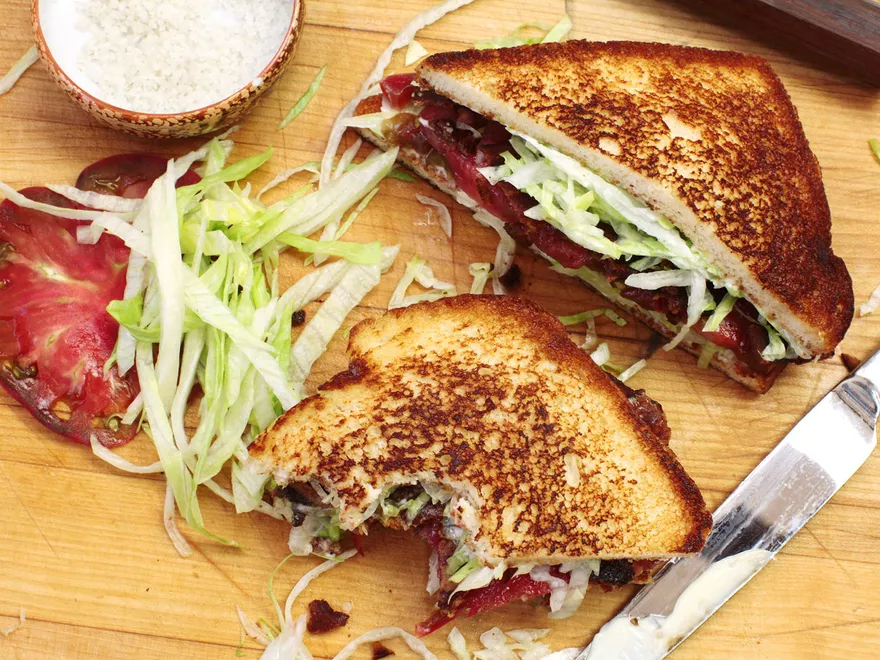

How to make the best BLT

Description
The grilled cheese may give it a buttery run for its money, but the BLT has more grace.
It doesn't come out of its corner firing on all cylinders, like a Cuban or a muffuletta,
but a BLT has stamina—each bite improves on the last. A Reuben may sucker-punch you with its
one-two jab of salt and fat, but what the BLT lacks in pure power, it makes up for in subtlety
and balance. The BLT is the true king of the sandwich ring, and it's my favorite sandwich of all
time.
Ingredients
- 3 strips thick-cut, naturally cured bacon
- 2 slices high-quality sandwich bread, such as shokupan
- 2 tablespoons (30ml) homemade or store-bought mayonnaise
- 1 1/2 cups finely shredded iceberg lettuce
- 4 thick slices ripe tomato
- Coarse sea salt, such as fleur de sel or Maldon
- Freshly ground black pepper
Steps
- Place a griddle or skillet over medium-low heat. Add bacon and place a bacon press, skillet,
or masonry trowel on top of it to keep it flat as it cooks. Cook until lightly browned on
first side, about 5 minutes, then flip, cover again, and continue cooking until bacon is
browned on both sides and fat has rendered, about 3 minutes longer. Transfer bacon to a
paper towel-lined plate and set aside.
- Place bread on sam
e skillet or griddle and toast in bacon fat over medium-low heat, swirling
occasionally, until evenly browned on first side. Flip and brown second side.
- Lay toasted bread on a work surface and spread mayonnaise on both top faces. Divide lettuce
evenly between both pieces of bread. Layer tomato slices on 1 piece of bread and sprinkle
generously with coarse salt and freshly ground pepper.
- Break bacon slices in half and layer them onto the sandwich in 2 layers of 3 half slices each,
alternating the orientation of bacon in each layer for more structural stability. Close sandwich
and cut in half diagonally. Serve immediately.
All text and images taken from Serious Eats.
Back to Homepage